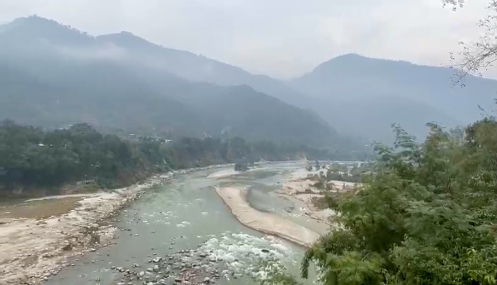
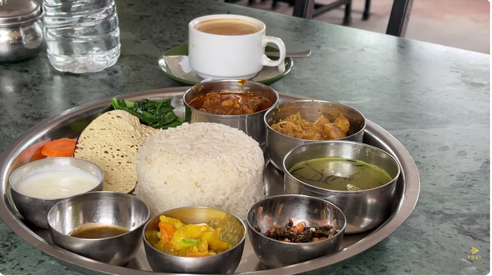

Real Story · 中文
有些 interview，是从一顿午餐开始的。
08/12/2023，我沿着 Trishuli River 开车。 那一带的河流、山、路和空气，都有一种很 Nepal 的层次感。 我决定停下来，在当地一间 restaurant 吃午餐。
那间地方叫 Trishuli View Restaurant and Bar。 它靠近河边，有漂亮的 view，也有特别设计给客人拍照、check-in 的角落。 对旅人来说，这样的地方不只是吃饭，也是一段路上的小休息。
吃饭的时候，我和年轻的店主 Sandip Shrestha 聊了起来。 他很愿意分享，也很认真地讲自己的 restaurant、食物、环境和想法。 于是我就提出，不如我帮他做一个 interview，放到 YouTube。
这就是旅行中很自然发生的事情。 本来只是停车吃午餐，后来变成认识一个人； 本来只是看 Trishuli River 的风景，后来变成记录一位年轻老板的故事。
很多时候，路边的小店并不只是 “food stop”。 它们也是当地人生活、梦想和努力的一部分。 Sandip 的热情，让这顿午餐变成了一段真正留下来的记忆。
Food Memory · Thakali Khana Set
The meal I kept ordering in Nepal.
At Trishuli View Restaurant and Bar, I ordered a Nepali meal that I loved so much during this part of the journey. I later remembered it as the kind of meal I kept ordering for three continuous days in Nepal.
It was likely a Thakali Khana Set, or a Nepali thali-style meal: rice, dal, curry, vegetables, achar, papad, yogurt, and tea. Compared with simple roadside food, it felt expensive for my travel budget. But I loved it very much.
Sometimes a meal becomes important not because it is luxurious, but because it gives the body comfort after many hard road days. This plate became one of those Nepal food memories I still remember clearly.

Related Video · Tuzi Vlogs Archive
Trishuli View Restaurant and Bar.
This video preserves the lunch stop, the river view, the restaurant setting, and the interview with Sandip Shrestha, the young shop owner behind the place.
English Memory Summary
A lunch stop became a conversation.
On 08/12/2023, Tuzi drove along the Trishuli River and decided to stop for lunch at a local restaurant. The place, Trishuli View Restaurant and Bar, offered a river view, a relaxed setting, and a small check-in area for visitors.
During the stop, Tuzi had a pleasant conversation with the young shop owner, Sandip Shrestha. His passion for food, hospitality, and creating a memorable place by the river turned a simple meal into something more.
Tuzi offered to interview him and post the story on YouTube. What began as lunch became another human encounter along the road.
Heart Statement
路边的一顿饭，也可以遇见一个人的梦想。
我原本只是想吃午餐。 可是 Trishuli River 把我带到一间小店， 也把 Sandip 的故事带到我面前。
有时候，旅程不是因为景点而停下。 是因为一个人愿意和你说话， 你也愿意替他留下一个记录。
I stopped for lunch. The road gave me a story.